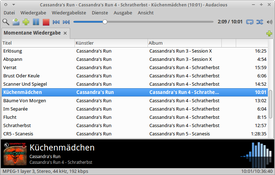
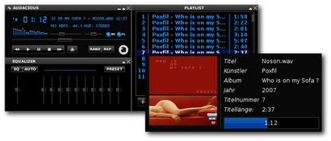
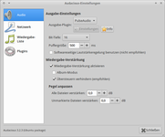
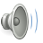
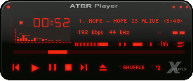
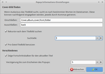
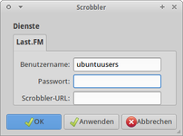
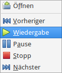
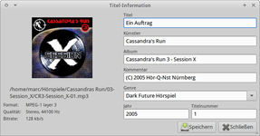

Audacious
Dieser Artikel wurde für die folgenden Ubuntu-Versionen getestet:
Ubuntu 16.04 Xenial Xerus
Ubuntu 14.04 Trusty Tahr
Zum Verständnis dieses Artikels sind folgende Seiten hilfreich:
Audacious  ist ein Fork des Beep Media Player (BMP). Die Arbeiten am BMP, der wiederum auf XMMS basierte, wurden schon vor längerer Zeit eingestellt. Winamp "Classic Skins" können aber mit Audacious weiter benutzt sowie Winamp-Equalizer-Einstellungen importiert werden. Zu den unterstützten Formaten gehören unter anderen MP3, MP4, MPEG-Audio, CD-Audio, AAC, SID, MOD, Ogg Vorbis, FLAC, WAV, WMA und NSF. Darüber hinaus unterstützt Audacious Internetradio, LIRC und LastFM/Audioscrobbler.
ist ein Fork des Beep Media Player (BMP). Die Arbeiten am BMP, der wiederum auf XMMS basierte, wurden schon vor längerer Zeit eingestellt. Winamp "Classic Skins" können aber mit Audacious weiter benutzt sowie Winamp-Equalizer-Einstellungen importiert werden. Zu den unterstützten Formaten gehören unter anderen MP3, MP4, MPEG-Audio, CD-Audio, AAC, SID, MOD, Ogg Vorbis, FLAC, WAV, WMA und NSF. Darüber hinaus unterstützt Audacious Internetradio, LIRC und LastFM/Audioscrobbler.
Das Ziel der Entwickler war es, mit Audacious einen entschlackten, schnellen, stabilen und funktionellen Audioplayer zu erstellen. Ab Ubuntu 11.04 ist das Programm der Standard-Audioplayer von Lubuntu. Mit Qmmp gibt es einen weiteren Player, mit dem alte Winamp "Classic Skins" genutzt werden können. Allerdings wird hier Qt statt GTK als Grafik-Bibliothek verwendet.
|  |
| GTK-Oberfläche |
|  |
| Winamp Classic-Oberfläche |
Installation¶
Ab Lubuntu 11.04 ist Audacious bereits vorinstalliert. Ansonsten installiert [1] man die folgenden Pakete:
audacious (universe)
audacious-plugins (universe, optional)
 mit apturl
mit apturl
Paketliste zum Kopieren:
sudo apt-get install audacious audacious-plugins
sudo aptitude install audacious audacious-plugins
Nach erfolgreicher Installation ist das Programm im Startmenü unter "Multimedia -> Audacious" (Xfce) bzw. "Unterhaltungsmedien -> Audacious" (LXDE) zu finden. Wer das Programm in einem Terminal-Fenster starten möchte, sollte beachten, dass der Befehl audacious2 (und nicht mehr audacious) verwendet werden muss.
PPA¶
In Ubuntu 16.10 wird Audacious in der Version 3.6.2 angeboten. Um die aktuellste Version zu benutzen, muss folgendes PPA freigschaltet werden[2]:
Adresszeile zum Hinzufügen des PPAs:
ppa:nilarimogard/webupd8
Hinweis!
Zusätzliche Fremdquellen können das System gefährden.
Ein PPA unterstützt nicht zwangsläufig alle Ubuntu-Versionen. Weitere Informationen sind der  PPA-Beschreibung des Eigentümers/Teams nilarimogard zu entnehmen.
PPA-Beschreibung des Eigentümers/Teams nilarimogard zu entnehmen.
Damit Pakete aus dem PPA genutzt werden können, müssen die Paketquellen neu eingelesen werden.
Da das genannte PPA eine Vielzahl anderer Programme enthält, sollte man es nach der Installation wieder deaktivieren.
Konfiguration¶
|  |
| Konfiguration |
Da das Programm intuitiv zu bedienen ist, werden hier nur die wichtigsten Optionen vorgestellt. Um zum Einstellungsfenster zu gelangen, anwählen oder alternativ einen  Rechtsklick auf das Programmfenster ausführen. Den Menüpunkt "Einstellungen" auswählen und die gewünschte Option im Menü ändern.
Rechtsklick auf das Programmfenster ausführen. Den Menüpunkt "Einstellungen" auswählen und die gewünschte Option im Menü ändern.
Folgende Optionen stehen zur Verfügung:
| Optionen | ||
| Icon | Menüpunkt | Beschreibung |
|  | "Audio" | Einstellungen zum Audio-System und Wiedergabeoptionen |
| "Netzwerk" | Konfiguration eines Proxy. | |
 | "Wiedergabe-Liste" | Einstellungen zu Dateinamen, Metadaten, Titelanzeige und Popup-Informationen vornehmen. |
| "Plugins" | Erweiterungen z.B. CD-Wiedergabe, Audiovisualisierung via projectM und Effekte (de)aktivieren bzw. konfigurieren. | |
|  |
| Skin |
Aussehen¶
Da der Standardskin nicht jedem zusagt, können neben den Audacious-Skins auch Skins der Player Winamp (nur Classic Skins), BMP oder XMMS verwendet werden. Bezugsquellen sind am Ende des Artikels zu finden. Nach dem Download kann der Skin einfach per Drag&Drop in das Menüfenster gezogen werden. Alternativ kann man ihn in das versteckte Verzeichnis ~/.local/share/audacious/Skins kopieren.
|  |
| Coveranzeige |
Cover¶
Um Cover zu Alben oder einzelnen Titeln anzeigen zu lassen, muss der Mauszeiger in der Wiedergabeliste über dem Titel verharren. Voraussetzung für die Funktion ist, dass in dem Ordner, in dem sich die Datei befindet, ein Cover hinterlegt ist (z.B. als folder.jpg). Um auch nach weiteren Schlagworten zu suchen (Cover.jpg o.ä.), müssen diese im Einstellungsmenü angegeben werden.
Erweiterungen¶
Für das Programm gibt es zahlreiche Plugins. Sollten die bereits im Programm enthaltenen Erweiterungen nicht ausreichen, gibt es die Möglichkeit, sich weitere von der Projektseite herunterzuladen und zu kompilieren [4]. Hier die jeweilige README beachten.
CD-Wiedergabe¶
Um Audio-CDs im Programm abspielen zu können, muss man unter "Plugins -> CD-Audio Plugin -> Einstellungen -> Device" bzw. "Eingabe -> Audio CD Support -> Einstellungen" den korrekten Pfad eingeben und /mnt/cdrom zu /media/cdrom abändern. Mittels des Buttons "Check drive..." kann man seine Einstellungen überprüfen. Sollten diese korrekt sein, mit "OK" bestätigen. Nun kann man mit Audacious Audio-CDs genießen. Soll Audacious automatisch Audio-CDs nach dem Einlegen abspielen, so wählt man in den GNOME3 Systemeinstellungen unter "Information → Wechselmedien → CD-Audio" Audacious als Abspielprogramm aus.
CD-Info¶
Sofern man Informationen zur abgespielten CD erhalten möchte, aktiviert man unter "Plugins -> CD-Audio Plugin -> Einstellungen -> CD Info" die Option "Use CDDB". Audacious lädt dann - bei bestehender Internetverbindung - die Daten der CD von freedb.freedb.org herunter.
|  |
| Last.FM |
Last.FM¶
Damit Audacious Daten zu den gespielten Stücken an LastFM übertragen kann, aktiviert man zuerst das Scrobbler Plugin unter "Einstellungen -> Plugins -> Allgemein -> Scrobbler". Unter "Einstellungen" die Daten hinterlegen. In älteren Versionen erscheint in der linken Leiste ein neuer Menüpunkt "Last.FM". Diesen anwählen und die Zugangsdaten von last.fm eingeben.
Hat man noch keinen Zugang, so kann man sich bei last.fm registrieren.
Status-Icon¶
Um den Audio-Player in die Systemleiste zu integrieren, muss man unter "Einstellungen -> Plugins -> Allgemein" die Option "Status Icon" aktivieren. In der Systemleiste erscheint nun das Symbol . Mit der Maus lässt sich das Programm bequem steuern. Um Informationen zum Titel zu erhalten, den Mauszeiger auf dem Symbol verharren lassen. Für weitere Aktionen zusätzlich:
| Status-Icon | |
| Maustaste | Effekt |
 | Player wird ein/ausgeblendet |
 (gedrückt) (gedrückt) | Ton ein/aus |
| (bewegt) | Lautstärke verändern |
| | Menü |
|  |
| Menü |
Bedienung¶
Menü¶
Über das Menü erreicht man alle Optionen des Players. Im Programm gibt es vier verschiedene Menüs, welche alle direkt über einen "Rechtsklick" erreicht werden können.
Maus¶
Mit dem Mausrad kann - je nach Konfiguration der Erweiterung - die Lautstärke im Player komfortabel gesteuert werden. Hier genügt es, den Cursor im Fenster zu positionieren und die Lautstärke zu verringern bzw. zu erhöhen, je nachdem in welche Richtung man das Mausrad dreht. In der Wiedergabeliste blättert man so durch alle hinterlegten Titel.
Equalizer¶
Den Equalizer öffnet man im Hauptfenster mit einem Klick auf . Ein erneutes Anklicken des Symbols schließt ihn wieder. Um den Equalizer zu aktivieren, "ON" anwählen und die Regler nach dem jeweiligen Geschmack anpassen. Um weitergehende Informationen über die Verwendung von "AUTO" und "Preset" zu erfahren, lohnt sich ein Besuch der Projektseite. Hierbei handelt es sich um die Möglichkeit, den EQ anzupassen sowie um den Im- und Export von Winamp EQF-Dateien.
Playlist¶
Der Wiedergabelisten Editor wird über "Wiedergabeliste -> Wiedergabelisten-Manager..." oder Strg + P erreicht. Nachdem einige Dateien der Playlist hinzugefügt worden sind, empfiehlt es sich diese Liste abzuspeichern, damit beim nächsten Mal, wenn diese angehört werden soll, nicht erst nach den Daten gesucht werden muss...
Es ist möglich, neben dem Programm einen Dateimanager geöffnet zu haben. Von hier aus können die Songs per Drag&Drop in der Playlist abgelegt werden.
|  |
| Titeldetails |
Titeldetails¶
Um weitergehende Informationen zum gerade abgespielten Titel zu erhalten, klickt man mit der rechten Maustaste () auf diesen, um das Titelmenü zu öffnen. Dies ist auch in der Wiedergabeliste möglich. Hier erhält man unter anderem Informationen zu: Format, Bitrate und ID3-Tag. Die enthaltenen Informationen des ID3-Tags können gelöscht oder bearbeitet werden. Bei großen Datenmengen empfiehlt sich der Einsatz von EasyTAG oder Audio Tag Tool (siehe auch Multimedia).
Bei Internetradios erhält man stattdessen die entsprechenden Angaben zum Stream.
Tipps & Tricks¶
Fenster vereinen¶
Um die Fenster (Player, Playlist ...) zu vereinen, bearbeitet [2] man im Homeverzeichnis .config/audacious/config. Hier trägt man folgendes ein:
snap_windows=FALSE
Internetradio¶
Mit den Programmen Streamtuner2, StreamRipStar oder TunaPie lassen sich zahlreiche Radiosender komfortabel auswählen und abspielen (sofern man in diesen Programmen Audacious als Abspielprogramm eingestellt hat). Im Wiki findet man eine Liste mit den erforderlichen Angaben für (meist) deutschsprachige Sender, u.a. 1Live, WDR2, Sunshine live und News89.4.
Thunar¶
Mit Thunar können "Benutzerdefinierte Aktionen" erstellt werden, die es ermöglichen, Audacious in das Kontextmenü einzubinden. Nähere Informationen sind dem Artikel Thunar/Benutzerdefinierte Aktionen zu entnehmen.
Tastenkürzel¶
| Audacious | |
| Taste(n) | Funktion |
| Strg + P | Einstellungen |
| Alt + C | CD-Wiedergabe |
| Strg + O | Player immer im Vordergrund |
| Alt + I | Titel-Details |
| Strg + Q | Programm beenden |
| Wiedergabe | |
| Taste(n) | Funktion |
| X | Wiedergabe |
| B | nächster Track |
| Z | vorheriger Track |
| C | Pause |
| V | Stop |
| J | Suchfunktion |
| Strg + Z | Start der Playlist vom Anfang |
Wiedergabeliste: mehr Informationen¶
Wird in der Wiedergabeliste nur der Titel angezeigt?
Homeverzeichnis .config/Audacious/config.txt bearbeiten [2] und folgenden Eintrag auf TRUE setzen:
multi_column_view=TRUE
Jetzt werden auch Artist, Album, Nr. etc. angezeigt.
- Erstellt mit Inyoka
-
 2004 – 2017 ubuntuusers.de • Einige Rechte vorbehalten
2004 – 2017 ubuntuusers.de • Einige Rechte vorbehalten
Lizenz • Kontakt • Datenschutz • Impressum • Serverstatus -
Serverhousing gespendet von